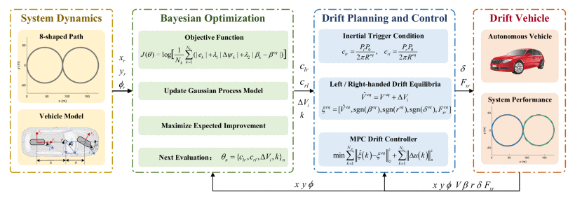
Output
Publications
Selected papers with public links to preprints, publishers, DOI pages, and code.
2025
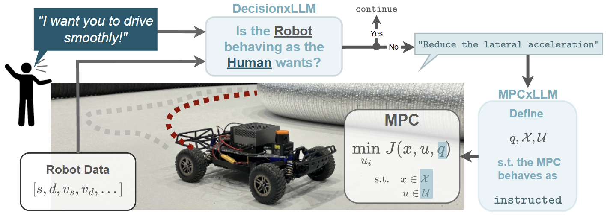
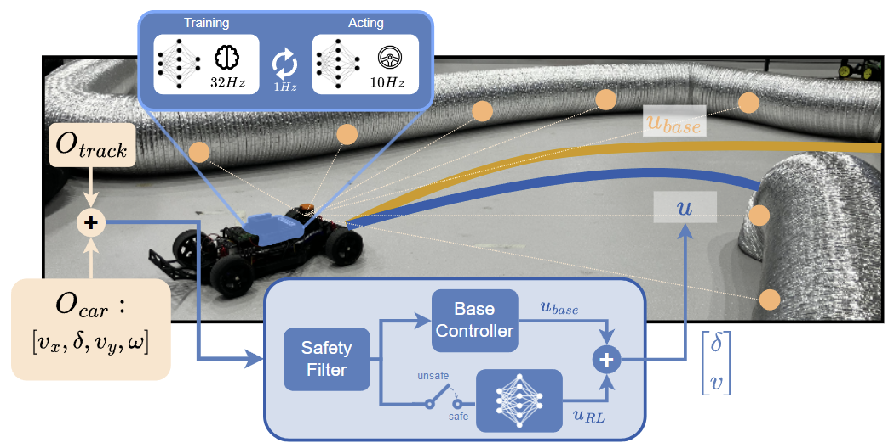
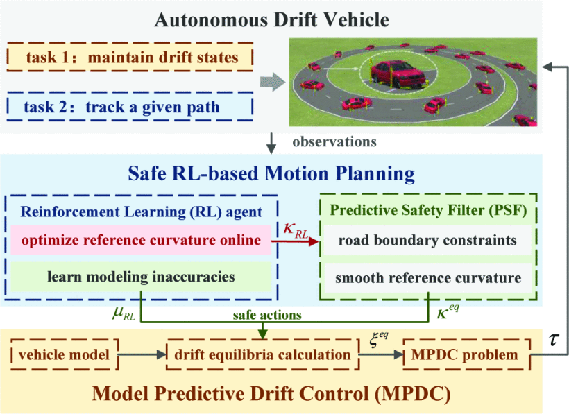
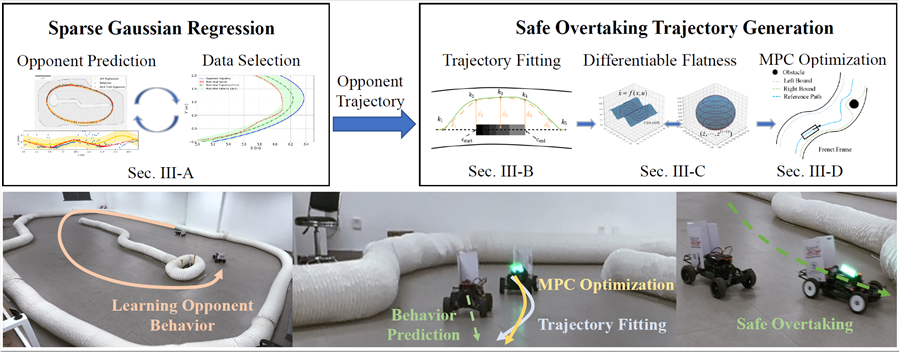
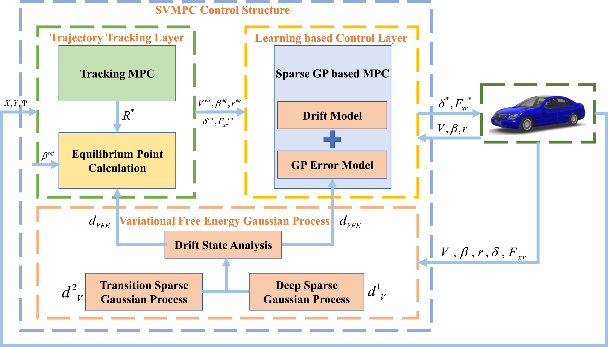
Transportation Research Part C, 2025
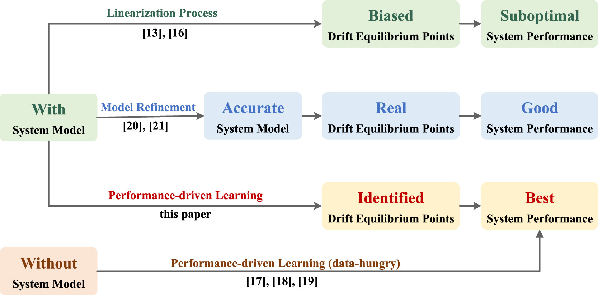
Adaptive Learning-Based Model Predictive Control Strategy for Drift Vehicles
Robotics and Autonomous Systems, 2025
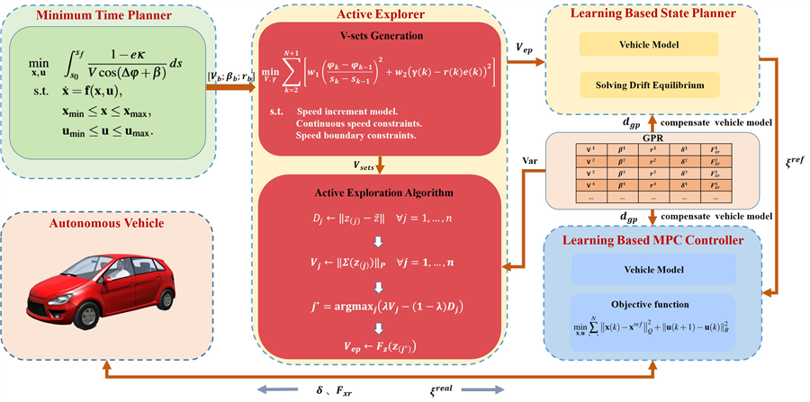
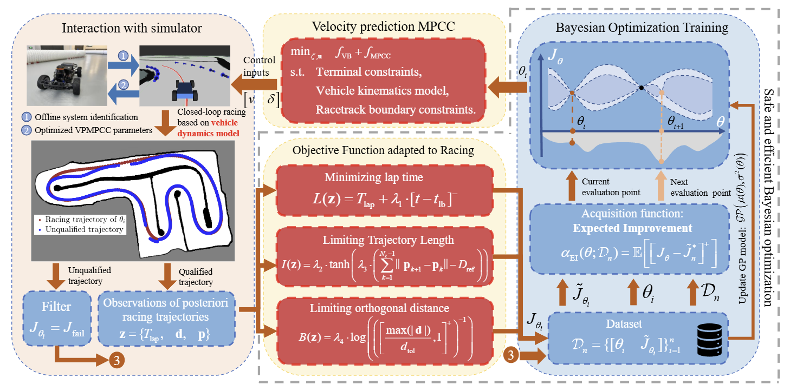
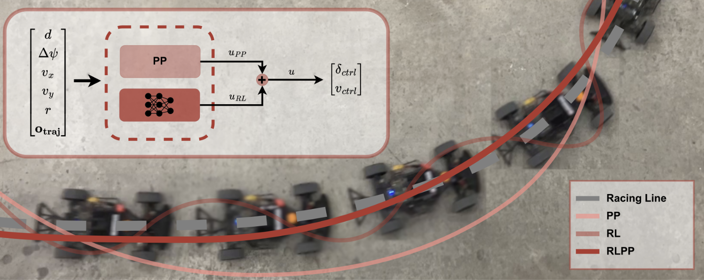
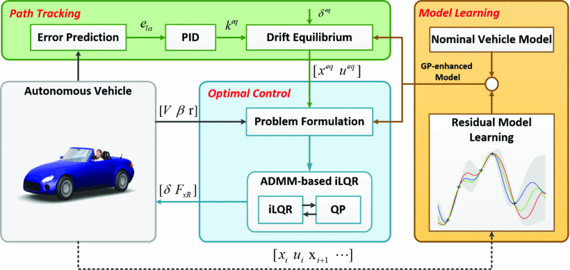
2024
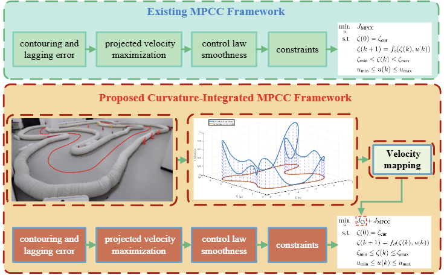
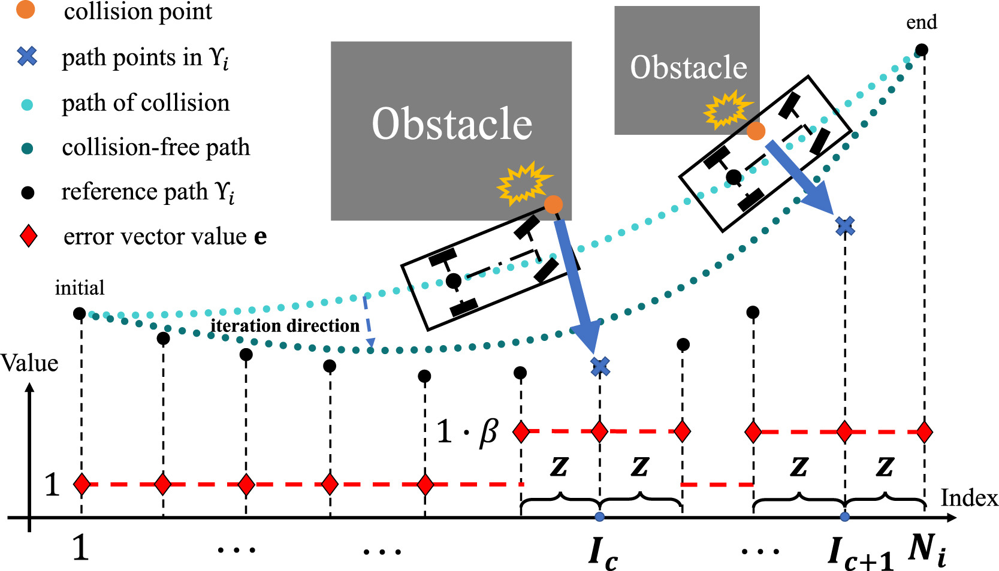
A Rapid Iterative Trajectory Planning Method for Automated Parking Through Differential Flatness
Robotics and Autonomous Systems, 2024
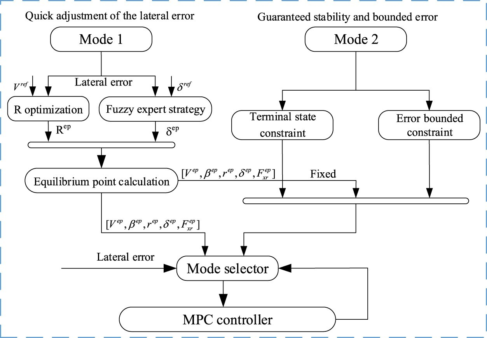
A Novel Model Predictive Controller for the Drifting Vehicle to Track a Circular Trajectory
Vehicle System Dynamics, 2024
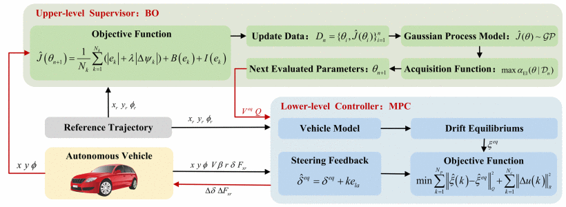
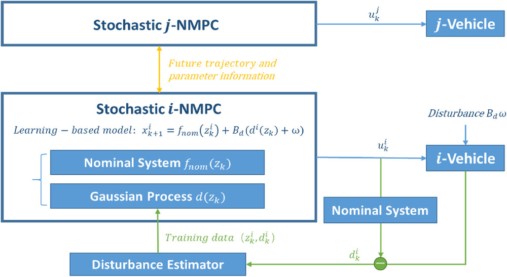
IET Intelligent Transport Systems, 2024
Selected Earlier Work
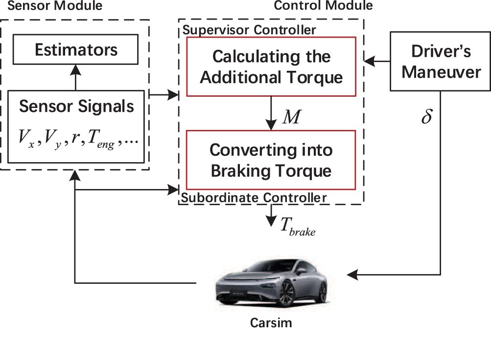
Vehicle Yaw Stability Control with a Two-Layered Learning MPC
Vehicle System Dynamics, 2023
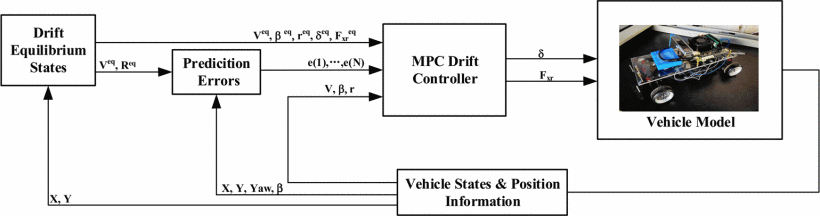